What is IPFS?
Table of Contents
1 Detailed Table of Contents
1.1 2. What does "IPFS" Offer? TOC
- What is "IPFS"?
- Object Storage
- Addressing Stored Values: Key-Value Stores
- Location Based Addressing
- Content-Hash Addressed
- Immutable
- Permanency
- Permissions
- Ownership
- Decentralized + Distributed
- Network Accessible Uniformly
- Security
1.2 3. What is IPFS? TOC
- Technologies Used/ Related
- Nodes
- IPFS Layers (Subsystems)
- IPLD InterPlanetary Linked Data
- LIBP2P
- IPNS InterPlanetary Naming System
- IPFS Applications
1.3 4. IPFS FAQs TOC
- IPFS Implementation Done?
- IPFS Integration with BitCoin, et al.
- Content Availability
- Content Permanency
- Content Secrecy
- Delete Content
- Does IPFS Guarantee Anonymity?
- Hosting a Website
- IPFS Abuse
- IPFS Hash Collision
- Public v Private IPFS
1.4 5. Related Projects TOC
- FileCoin
- Orbit
- DTube
- ZeroNet
- Akasha
- Competing Projects
- Distributed Web Applications (DApps)
1.5 6. IPFS Why Should We Care?
- Future Web? Web 3.0?
- Un-censorable.
- "Trust, but Verify." No 3rd parties. Content can be trusted.
- Digital ledgers built-in.
- More at the end of these Lectures.
1.6 On to the Content of this Lecture
- The next few descriptions are loaded with "terminology".
- Often, Circular.
- These are going to leave you with a number of questions. Wait for FAQ below.
2 What does "IPFS" Offer?
- (Linux/ …) OS File System.
- Web content: As it is now 2018, Web 2.0, Web 3.0 soon.
- Globally + Uniformly Network accessible.
- A platform for Distributed Apps (DApps).
2.1 What is "IPFS"?
- The current section is a collection of ideas.
- Together they can be the basis for a future design of web.
- The next section is a description of IPFS, the specific "product".
- IPFS, an acronym for "InterPlanetary File System".
2.2 Object Storage
- Digital Objects are stored in "nodes": distributed across the globe, decentralized.
- The "FS" in the name does not stand, strictly, for files.
- A "file" is any digital object, small or large.
- Objects are stored in a MerkleDAG.
2.3 Addressing Stored Values
2.3.1 Arrays and Indices
a[x]- array name a,
- index integer x,
- x >= 0 mostly.
- address of a[x+1] == address of a[x] + size-of(a[x])
2.3.2 Associative Arrays
- a collection of pairs (x, a[x]) of indices x and values a[x]
- unordered
- no duplicated indices
- cache memory
- Often drawn as an array, but no address relationships among elements
2.3.3 Key-Value Stores
- Generalize the indices in assoc arrays to arbitrary types called keys.
- No address relationships among elements.
- Given a key
k, retrieve valueval(k) - https://redis.io/ | https://memcached.org/
2.4 Location Based Addressing
- Web 1.0/ 2.0 URLs have the following syntax:
scheme: //[userName[:password@]] serverMachineName [:port]/ [path] [/resource][?parm1=parma &parm2=parmb] - A simple example of the above is http://www.cs.wright.edu/~pmateti/
where the scheme was chosen to be
http, the port defaults to 80, and the path given is~pmateti/.
2.5 Content-Hash Addressed
- Apply a crypto-hash (e.g., sha256) to the content, resulting in, e.g.,
QmZpfhN5rucQC4kx7Gu5udS8FXxsxMddiDCvG8WFjG8SMv - The above is in multihash self-describing format and Base58
encoding. The letters
Qmcorrespond to SHA-256 and 32 byte length. - IPFS makes sure the hash is unique.
- An IPFS address hash should be stored in
bytes. TheQm...should be stored as astring. - IPFS link
/ipfs/QmW2WQi7j6c7UgJTarActp7tDNikE4B2qXtFCfLPdsgaTQ/cat.jpg http://localhost:8080/ipfs/QmR96iiRBEroYAe955my8cdHkK4kAu6SApGC2eS5kSzHwt/
2.5.1 MultiHash
- struct Multihash
struct Multihash { bytes32 hash uint8 hash_function uint8 size } - ipfs add -w example.txt
$ ipfs add -w example.txt added QmbFMke1KXqnYyBBWxB74N4c5SBnJMVAiMNRcGu6x1AwQH example.txt added QmVFDXxAEC5iQ9ptb36dxzpNsQjVatvxhG44wK7PpRzsDE
2.5.2 Retrievability
- To retrieve content, you must have its hash.
- Ex: https://ipfs.io/ipfs/QmR7GSQM93Cx5eAg6a6yRzNde1FQv7uL6X1o4k7zrJa3LX/…
- User friendly? Work-in-progress. See IPNS.
2.6 Immutable
- The content (of a stored object) is unchangeable.
- The content is versioned, with a link to its previous version.
- Recall digital ledgers.
- Deletion? See FAQ.
2.7 Permanency
- IPFS is a permanent storage system for digital objects. Lives forever.
- An object stored in IPFS is retrievable at any time, 24x7, from a node.
- Motivated by incentivization.
2.8 Permissions
- As long as you have the hash of an object, you can retrieve it from IPFS.
- Can we have at least Linux-style read-write-etc permissions? WIP.
- FAQ: Public v Private IPFS.
2.9 Ownership
- What is ownership? Define. Related to immutability.
- No single entity, human or org, owns the system, or any part of it.
- No "destructive" operations can be performed.
- FAQ: Who uploaded what?
2.10 Decentralized + Distributed
- "It's nowhere because it's everywhere!"
- Sanskrit: Sarvantaryami (in Telugu script సర్వాంతర్యామి)
2.10.1 Client-Server v P2P
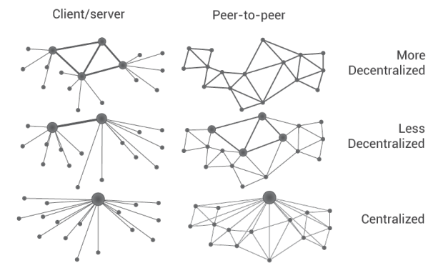
Figure 1: Client-Server v P2P
2.10.2 Centralized Decentralized Distributed
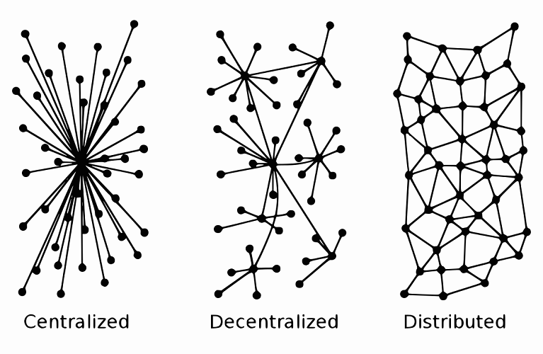
Figure 2: Centralized Decentralized Distributed
2.10.3 Distributed
- Spatially Distributed
- Possibly replicated
- We use duplication versus replication with different semantics.
- Sharded content?
2.10.4 Decentralized
- Harder to define.
- Centralized: One node exists that controls all content.
- Multiple centers.
- Decentralized: Single or multiple centers do not exist.
2.10.5 Decentralized implies Distributed
2.10.6 Distributed does-not-imply Decentralized
2.11 Network Accessible Uniformly
- All IPFS nodes access the objects using the same addresses.
- No client is denied access.
- Performance can vary.
2.12 Security
- "Security" is an ill defined term, in general. So, let us focus on the following aspects.
- Unauthorized content modification: Not possible.
- Read-Access control Built-in: Non existent.
- Read-Access control DIY: Encrypt the object and share the (private) key.
- Learn to securely share on the IPFS.
3 What is IPFS?
- A peer-to-peer hypermedia protocol:
ipfs:/.../.... - A (networked) storage system that can be
mount-ed. - Funding: $52 million from Union Square Ventures (??) and others.
- IPFS is FOSS.
- This section is a sketchy design description.
3.1 Technologies Used/ Related
- DHT Distributed Hash Tables - Kademlia
- Block Exchanges - BitTorrent
- Version Control Systems, merkledag - Git
- Self-certifying File System SFS
- FileCoin
3.2 Nodes
- A node is a computer system running the "IPFS daemon":
ipfs init - A node stores IPFS objects.
- Obviously, not all of them.
- No assumptions are made about the life-cycle of a node.
- A node is a running process that can find, publish, and replicate merkledag objects.
3.2.1 Nodes #2
- Access requests originate from a node.
- Retrieved content is cached.
- Idle cached content is garbage collected.
- Nodes cannot be forced to fetch anything or to pin anything.
- A node uses the DHT, IPLD, IPNS – see below.
3.2.2 Nodes #3
- There are already many (thousands?) nodes.
- Content becomes more readily available as it gets more popular.
- Often content "cannot" be reached.
3.3 IPFS Layers (Subsystems)

Figure 3: IPFS Layers (the left half names pre-existing systems)
3.3.1 IPFS Subsystems
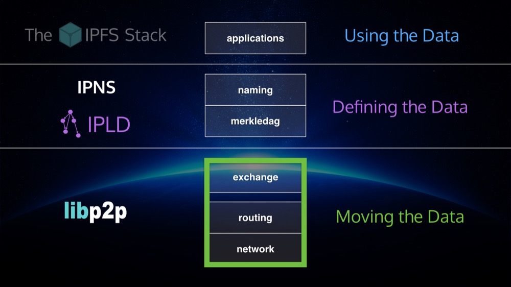
Figure 4: IPFS stack, divided
3.4 IPLD InterPlanetary Linked Data
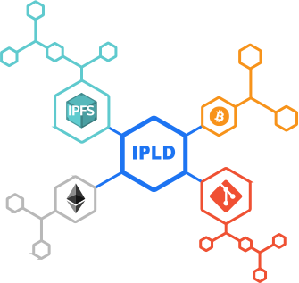
Figure 5: InterPlanetary Linked Data
3.4.1 IPLD InterPlanetary Linked Data
- IPLD InterPlanetary Linked Data https://github.com/ipld
- "IPLD is the data model of the content-addressable web. It allows us to treat all hash-linked data structures as subsets of a unified information space, unifying all data models that link data with hashes as instances of IPLD."
- "IPLD is a single namespace for all hash-inspired protocols. Through IPLD, links can be traversed across protocols, allowing you explore data regardless of the underlying protocol."
3.5 LIBP2P
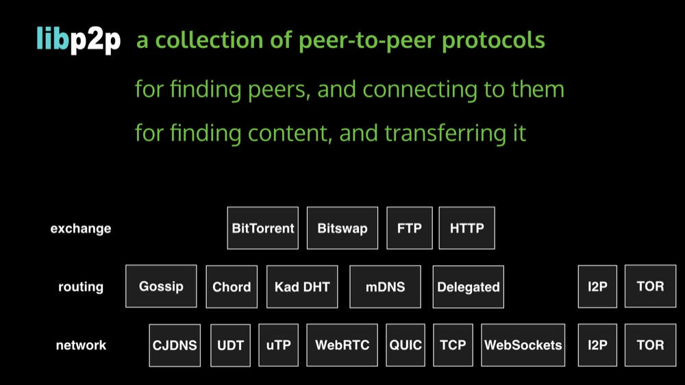
Figure 6: libp2p included protocols
3.5.1 LIBP2P #2

Figure 7: libp2p routing
3.6 DHT Distributed Hash Tables
- DHT: Given the Key, retrieve Value.
- Similar to Python dict or Perl hash. Not (necessarily) crypto-hash.
- The DHT may be distributed over multiple nodes.
- Multiple designs/ implementations exist: e.g., Kademlia.
- IPFS key is crypto-hash of object content.
3.7 IPFS Networking
- "IPFS nodes communicate regularly with hundreds of other nodes in the network."
3.7.1 IPFS Routing
- IPFS nodes require a routing system that can find (a) other peers’ network addresses and (b) peers who can serve particular objects.
- IPFS achieves this using a DHT.
3.7.2 DHT Interface
type IPFSRouting interface {
FindPeer(node NodeId) // gets a particular peer’s network address
SetValue(key []bytes, value []bytes) // stores a small metadata value in DHT
GetValue(key []bytes) // retrieves small metadata value from DHT
ProvideValue(key Multihash) // announces this node can serve a large value
FindValuePeers(key Multihash, min int) // gets a number of peers serving a large value
}
3.8 IPFS Exchange
- In IPFS, data distribution happens by exchanging blocks with peers using BitSwap.
- BitSwap nodes provide direct values to each other in the form of blocks.
- BitSwap nodes keep ledgers accounting the transfers with other nodes
3.9 IPNS InterPlanetary Naming System
- The Peer ID is the hash of the public RSA key of the node. IPNS maps peer IDs to content hashes.
- The mapping can be modified.
ipfs name publish QmNUhKfcGJyQJnZu3AKn8NoiomDwDCRBicgqPt1YRqJBCz Published to QmYmmfn68vkcFDeZz1NTZyEXTixjjUnUS6UaPdMSsUBWxs: /ipfs/QmNUhKfcGJyQJnZu3AKn8NoiomDwDCRBicgqPt1YRqJBCz
- In the above,
QmYmmfn68vkcFDeZz1NTZyEXTixjjUnUS6UaPdMSsUBWxswas the peer ID. - IPFS stores the private RSA key in the configuration. No passphrase.
3.9.1 Readability
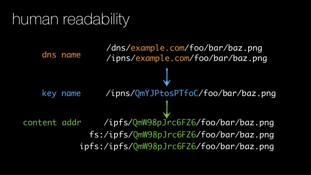
3.9.2 Readability #2
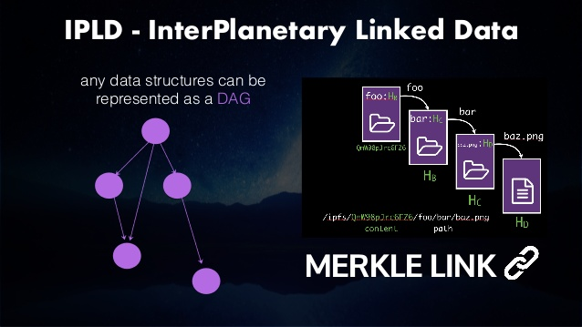
3.9.3 IPFS Naming
- Bind IPNS to a domain using DNS TXT records
3.9.4 IPFS MerkleDAG

Figure 10: A Merkle Bin Tree of Four Blocks
3.9.5 Details of MerkleDAG
- Merkle trees in general are n-ary.
- A forest is a collection of trees.
- Merkle Trees are already in use by Git, BitCoin, Ethereum, …
3.9.6 IPFS Digital Objects
- block: a variable-size chunk of data. An addressable unit of data.
- list: a collection of blocks or other lists.
- tree: a collection of blocks, lists, or other trees.
- commit: a snapshot in the version history of a tree.
3.10 IPFS Applications
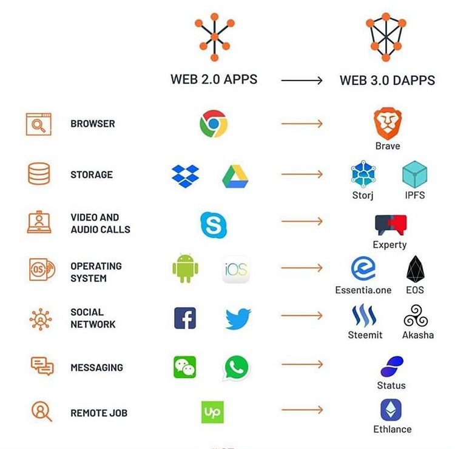
3.10.1 PubSub
- Publishers-Subscribers is an object oriented architectural design pattern.
3.10.2 Observer Pattern
##
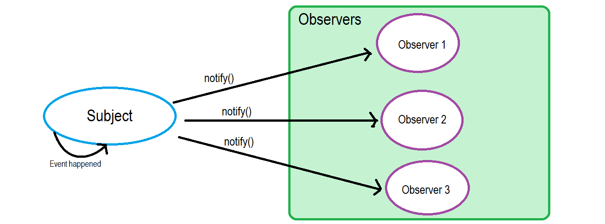
Figure 12: Observer Pattern
3.10.3 PubSub (Publisher Subscriber) Pattern

Figure 13: PubSub Pattern
4 IPFS FAQs
4.1 IPFS Implementation Done?
- Is the design and implementation of IPFS done?
- Go https://github.com/ipfs/go-ipfs exists,
- JavaScript https://github.com/ipfs/js-ipfs exists,
- Python https://github.com/ipfs/py-ipfs is in progress.
- Alpha. Targeted at developers.
4.2 IPFS Integration with BitCoin, et al.
- Can IPFS integrate with BitCoin, Git, …? Yes.
- See IPLD.
4.3 Content Availability
- Will something added to IPFS remain available to others if I turn off my computer?
- Turning off is not the crucial point.
- Unreachable because un-cached in reachable nodes.
- https://discuss.ipfs.io/t/397
4.4 Content Permanency
- No guarantees of replication; need people to request content data.
- Incentivization in progress.
- https://discuss.ipfs.io/t/storing-a-few-tb-of-data/476
4.5 Content Deletion
- Can I delete (my) content from the network? No.
- See above.
- https://discuss.ipfs.io/t/301
4.6 Content Secrecy
- Objects can be made illegible using public key cryptography. Those holding the private key can read. Others can only tell how big they are but they cannot know more.
- Incentivize to keep such content available.
4.7 Content Privacy
- Private swarms, WIP.
- Separate name spaces, WIP.
- Public v Private IPFS, WIP.
4.8 Does IPFS Guarantee Anonymity?
- IPFS makes no claims about anonymity.
- We can discover the IP address of a peer hosting any given block.
- https://discuss.ipfs.io/t/387
4.9 Hosting a Website
- The main site https://ipfs.io/ is on IPFS.
- Example: http://www.dispersion.io/
- Example: "The Ramblings of a Random Programmer"
https : //ipfs.io/ipfs/QmdPtC3T7Kcu9iJg6hYzLBWR5XCDcYMY7HV685E3kH3EcS/ 2015/09/15/ hosting-a-website-on-ipfs/[Blanks inserted for readability] - Google does not index IPFS (yet).
- See https://discuss.ipfs.io/t/is-ipfs-fit-for-personal-blog-pages/331
4.10 IPFS Abuse
- Forgoing reputation and indiscriminately servicing leaches https://discuss.ipfs.io/t/444
- Is it possible to limit the size of a local storage? https://discuss.ipfs.io/t/364
- Can I control the amount of storage/ bandwidth dedicated to IPFS? https://discuss.ipfs.io/t/395
4.11 IPFS Hash Collision
- What to do in case of hash collision? Multiple objects crypto-hashing to the same.
- https://discuss.ipfs.io/t/482
4.12 Who Uploaded What?
- We can discover the IP address of a peer hosting any given block.
4.13 Misc
- {IPNS works badly now, but this is because of the implementation.}
- IPFS uses a lot of bandwidth now. WIP
5 Related Projects
- Sister Projects
- Competing Projects
5.1 FileCoin
- FileCoin is a sister project, by Protocol Labs. FOSS.
- http://filecoin.io/ as an incentive to replicate data. (Get paid "payed" for storing files.)
- {You offer to pay for storage, and the most efficient, capable, and cheap hard drives win the bid and they host your files.}
5.2 FileCoin #2
- Filecoin is a protocol that pays nodes to keep a copy of your stuff without having to trust them.
- When you use Google Drive, you are trusting google.
- Google Drive has a user interface and editors for your spreadsheets etc, sharing functionality and much more.
- Filecoin is just a system to have others store files for you and that's it.
5.3 Orbit
- Orbit P2P Chat https://orbit.chat/
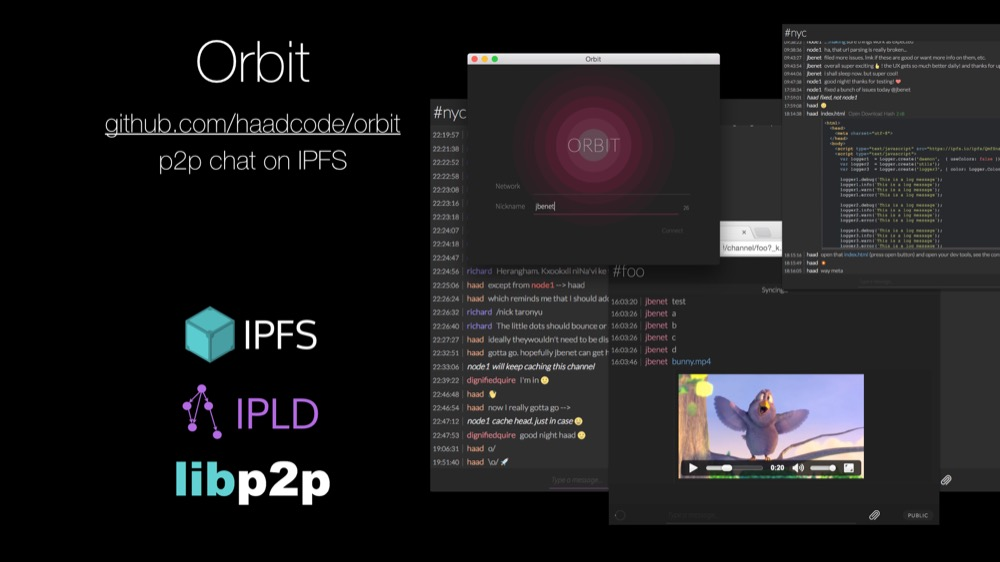
Figure 14: Orbit P2P Chat on IPFS
5.4 DTube
- https://d.tube/ A decentralized video platform using STEEM and IPFS
- Image "hosting": https://github.com/ipfspics/ipfspics-server | http://ipfs.pics/ [Broken link]
5.5 ZeroNet
- https://zeronet.io/ "Open, free and uncensorable websites, using Bitcoin cryptography and BitTorrent network"
5.6 Akasha
- AKASHA (a Next-Generation Social Media Network) https://akasha.world/ TBD Sanskrit ākāśa आकाश
- orbit-db (Key/Value database; Peer-to-Peer Databases for the Decentralized Web)
5.7 Competing Projects
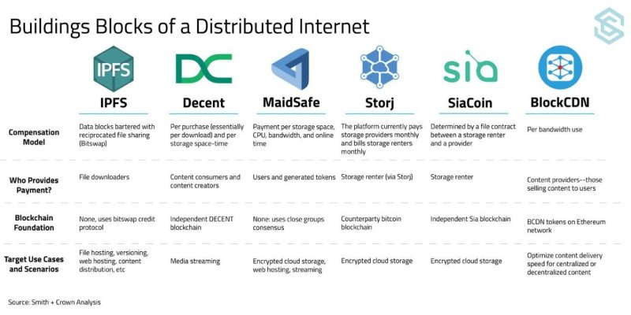
5.7.1 LBRY
- Content Freedom https://lbry.io/
5.7.2 DAT
- http://datproject.org/ A distributed data community, dat
5.7.3 PEERGOS
- https://peergos.org/ An end-to-end encrypted, peer-to-peer file storage, sharing and communication network. It is an open source, secure, self hostable file storage and sharing platform. All your files are encrypted locally and your private keys never leave your machine. FOSS.
5.8 Distributed Web Applications (DApps)
- IPFS is a platform for dApps.
- Orbit P2P Chat https://orbit.chat/
- https://peerpad.net/ PeerPad is a realtime P2P collaborative editing tool, powered by IPFS and CRDTs (conflict-free replicated data type)
6 IPFS Why Should We Care?
- Un-censorable.
- Trust, but Verify. No 3rd parties. Content can be trusted.
- Digital ledgers built-in.
- More at the end of these Lectures.
7 ACK
- Juan Bennet, @article{benet2014ipfs, title={IPFS-Content Addressed, Versioned, P2P File System (Draft 3)}, author={Benet, Juan}, journal={arXiv preprint arXiv:1407.3561}, year={2014}, pages = {11},} https://ipfs.io/ipfs/QmR7GSQM93Cx5eAg6a6yRzNde1FQv7uL6X1o4k7zrJa3LX/ipfs.draft3.pdf
- @Article{Filecoin2017, author = {Protocol-Labs}, title = {Filecoin: A Decentralized Storage Network}, journal = {White Paper}, year = {2017}, pages = {36}, month = {July}, }
- Mark Pors, https://decentralized.blog/ Catching the Blockchain Train, Understanding-the- IPFS white-paper 2017.
- All figures are borrowed from the web.